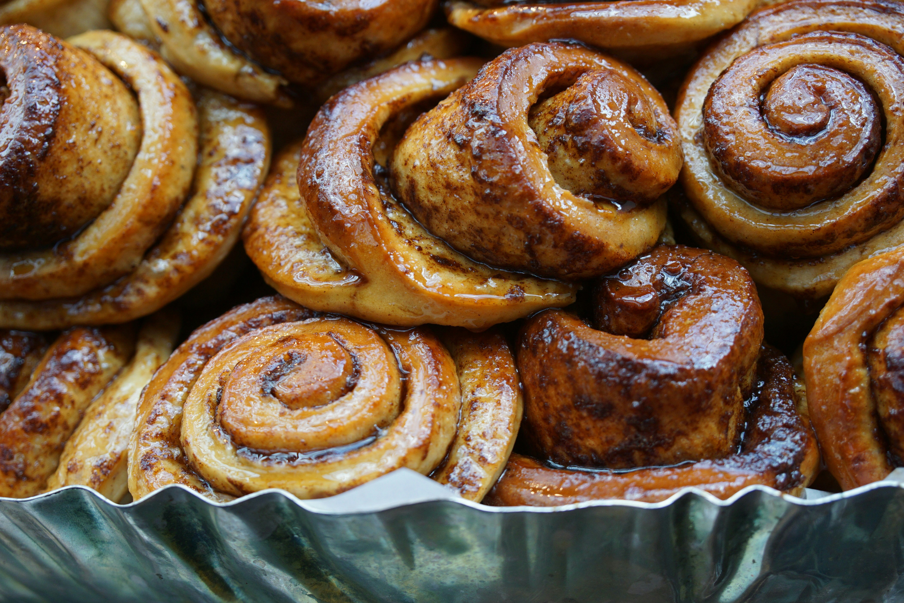

Cinnamon Rolls

These homemade cinnamon rolls are a perfect blend of soft, fluffy dough, rich cinnamon-sugar filling, and a creamy, luscious icing. Each bite offers a delightful balance of sweetness and warmth, making them an irresistible treat for breakfast, brunch, or dessert. The rolls are baked to golden perfection, then topped with a smooth cream cheese icing that melts into the crevices, adding a touch of indulgence to every bite. Whether enjoyed fresh from the oven or savored later, these cinnamon rolls are sure to become a favorite in your recipe collection.
Make it, taste it, enjoy!
List of Ingredients
- 4 cups all-purpose flour
- 1 packet (2 1/4 tsp) active dry yeast
- 1 cup warm milk (110°F/45°C)
- 1/3 cup granulated sugar
- 1/3 cup unsalted butter, softened
- 1/2 teaspoon salt
- 2 large eggs
- Tomatoes
Here is how
- Prepare the Dough
In a small bowl, dissolve the yeast in warm milk and let it sit for about 5 minutes until frothy.
In a large mixing bowl, combine the flour, sugar, softened butter, salt, eggs, and the yeast mixture.
Mix until the dough comes together, then knead for about 5-7 minutes, until smooth and elastic.
Place the dough in a lightly greased bowl, cover it with a clean cloth, and let it rise in a warm place for about 1 hour or until doubled in size.
- Make the Filling
In a small bowl, mix the softened butter, brown sugar, and cinnamon until well combined.
- Assemble the Rolls
Once the dough has risen, punch it down and roll it out on a floured surface into a rectangle, approximately 16x12 inches.
Spread the cinnamon-sugar filling evenly over the dough.
Roll up the dough tightly, starting from the long edge, and pinch the seam to seal.
Cut the rolled dough into 12 equal slices and place them in a greased 9x13-inch baking dish.
Cover the dish with a clean cloth and let the rolls rise again for about 30 minutes, until doubled in size.
- Bake the Rolls
Preheat your oven to 350°F (175°C).
Bake the rolls in the preheated oven for 20-25 minutes, until golden brown.
- Prepare the Icing
Once the cinnamon rolls are baked, remove them from the oven and let them cool slightly.
Spread the icing generously over the warm rolls.
Enjoy!